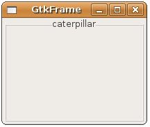
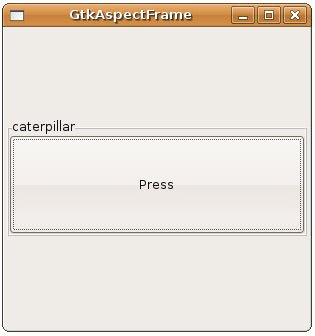

GtkFrame是GtkContainer的子類，可以容納子元件，並擁有一個外框及標籤文字：
GtkContainer
+----GtkBin
+----GtkFrame
+----GtkBin
+----GtkFrame
您可以使用gtk_frame_new()建立一個GtkFrame，並在建立時指定標籤文字，或是在之後使用gtk_frame_set_label ()設定文字，標籤文字的位置預設是左上邊，您可以使用gtk_frame_set_label_align()設定標籤文字的位置：
GtkWidget* gtk_frame_new(const gchar *label);
void gtk_frame_set_label(GtkFrame *frame,
const gchar *label);
void gtk_frame_set_label_align(GtkFrame *frame,
gfloat xalign,
gfloat yalign);
void gtk_frame_set_label(GtkFrame *frame,
const gchar *label);
void gtk_frame_set_label_align(GtkFrame *frame,
gfloat xalign,
gfloat yalign);
gtk_frame_set_label_align()可以設定xalign與yalign，設定值為0.0到1.0，xalign設定水平對齊，yalign設定文字的垂直對齊，您也可以使用gtk_frame_set_shadow_type()來設定外框樣式：
void gtk_frame_set_shadow_type(GtkFrame *frame,
GtkShadowType type);
GtkShadowType type);
下面的程式是個簡單的設定範例：
- gtk_frame_demo.c
#include <gtk/gtk.h>
int main(int argc, char *argv[]) {
GtkWidget *window;
GtkWidget *frame;
gtk_init(&argc, &argv);
window = gtk_window_new(GTK_WINDOW_TOPLEVEL);
gtk_window_set_title(GTK_WINDOW(window), "GtkFrame");
gtk_window_set_default_size(GTK_WINDOW(window), 200, 150);
frame = gtk_frame_new("caterpillar");
gtk_frame_set_label_align(GTK_FRAME(frame), 0.5, 0.5);
gtk_frame_set_shadow_type(GTK_FRAME(frame), GTK_SHADOW_ETCHED_OUT);
gtk_container_add(GTK_CONTAINER(window), frame);
g_signal_connect(GTK_OBJECT(window), "destroy",
G_CALLBACK(gtk_main_quit), NULL);
gtk_widget_show_all(window);
gtk_main();
return 0;
}下圖是一個執行的結果畫面：

GtkAspectFrame是GtkFrame的子類，使用上與GtkFrame類似，但多了xsize/ysize的比例設定，可用以限定子元件的長寬比例：
GtkWidget* gtk_aspect_frame_new(const gchar *label,
gfloat xalign,
gfloat yalign,
gfloat ratio,
gboolean obey_child);
gfloat xalign,
gfloat yalign,
gfloat ratio,
gboolean obey_child);
xalign與yalign的作用與GtkFrame相同，ratio就是比例設定，obey_child設定為TRUE時，表示依子元件的長寬比例來顯示，若設定為FALSE，則表示依ratio的比例設定來顯示。
下面的範例是個簡單的示範，由於GtkAspectFrame的ratio設定為2（xsize/ysize），所以按鈕元件的顯示將依這個比例：
- gtk_aspect_frame_demo.c
#include <gtk/gtk.h>
int main(int argc, char *argv[]) {
GtkWidget *window;
GtkWidget *frame;
GtkWidget *button;
gtk_init(&argc, &argv);
window = gtk_window_new(GTK_WINDOW_TOPLEVEL);
gtk_window_set_title(GTK_WINDOW(window), "GtkAspectFrame");
gtk_window_set_default_size(GTK_WINDOW(window), 300, 300);
frame = gtk_aspect_frame_new("caterpillar", 0.5, 0.5, 2, FALSE);
gtk_frame_set_shadow_type(GTK_FRAME(frame), GTK_SHADOW_ETCHED_OUT);
button = gtk_button_new_with_label("Press");
gtk_container_add(GTK_CONTAINER(frame), button);
gtk_container_add(GTK_CONTAINER(window), frame);
g_signal_connect(GTK_OBJECT(window), "destroy",
G_CALLBACK(gtk_main_quit), NULL);
gtk_widget_show_all(window);
gtk_main();
return 0;
}一個執行的結果如下所示：
